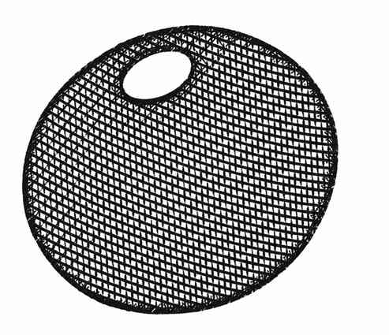

彩色法球 · Chromatic Orb
幻术师在手中生成一枚不同颜色的小球，朝无遮挡、距自己不超过 3″的目标掷出。法球本身具有魔法，命中后连通常只能由 ＋4、＋5等武器伤害的生物也受影响；魔法抗性仍然适用。目标距施法者 1″以内时命中 ＋3，超过 1″至 2″时 ＋2，超过 2″至 3″时 ＋1。未命中的法球直接消散。幻术师可选择自己等级允许的任意颜色，也可选择较低等级的颜色。
| 所需最低等级 | 法球颜色 | 命中伤害 | 附加作用 |
|---|---|---|---|
| 1 | 珍珠色 Pearly | 1–4 | 光亮¹ |
| 2 | 红宝石色 Ruby | 1–6 | 热力² |
| 3 | 火焰色 Flame | 1–8 | 火焰³ |
| 4 | 琥珀色 Amber | 1–10 | 失明⁴ |
| 5 | 祖母绿色 Emerald | 1–12 | 臭云⁵ |
| 6 | 绿松石色 Turquoise | 2–16 | 磁化⁶ |
| 7 | 蓝宝石色 Sapphire | 2–8 | 麻痹⁷ |
| 10 | 紫晶色 Amethyst | 减速 | 石化⁸ |
| 12 | 灰白色 Ashen | 麻痹 | 致死⁹ |
1. 光亮： 生成相当于光亮术的光，持续每施法者等级 1 轮；目标若对法术豁免失败，在此期间失明。 2. 热力： 可融化至多 1 立方码冰；目标若对法术豁免失败，接下来 1 轮力量和敏捷各减 1，或命中与护甲等级各受 −1。 3. 火焰： 点燃目标周围 1 英尺内一切易燃物；目标若对法术豁免失败，额外受 2 点火焰伤害，但天然或魔法防火可阻止此伤害。 4. 失明： 除非对法术豁免成功，目标失明 5–8 轮；治疗失明或解除魔法可消去效果。 5. 臭云： 命中后在目标周围形成半径 5 尺的魔法臭云。目标须对毒素豁免，否则无助；无论如何，留在云中时均无法行动。参照臭云术。 6. 磁化： 法球造成电击伤害。若目标穿戴铁磁性金属，除非对法术豁免成功，该金属会磁化 3–12 轮，与其他已磁化金属牢牢相吸；未磁化的铁磁性物品也会吸附，但可以用力扯开。 7. 麻痹： 除非对麻痹豁免成功，目标麻痹 5–20 轮。 8. 石化： 除非对石化豁免成功，目标化为石头；即便豁免成功，也会如受减速术影响 2–8 轮。 9. 致死： 除非对死亡魔法豁免成功，目标死亡；即便豁免成功，也会麻痹 2–5 轮。
材料成分是与所选颜色相符的宝石，或钻石等透明晶体。颜色合适时，价值低至 50 金币的宝石即可。
